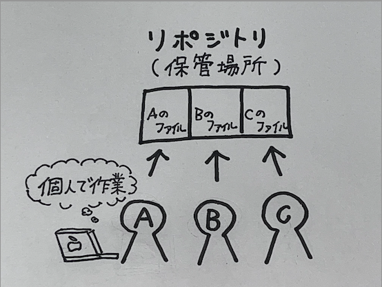
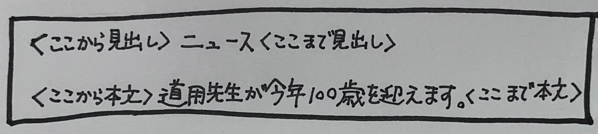
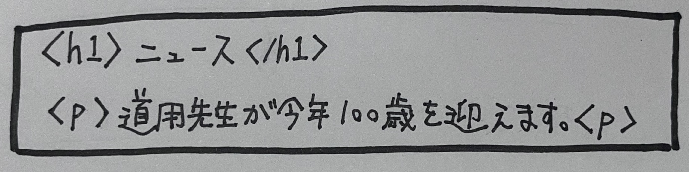

デザイン演習 第一回
○gitに関して
Gitの特徴の中で最も大きいのが「分散型」であることです。バージョン管理ツールには、分散型と集中型の2種類があり、従来は集中型が中心でしたが、最近は分散型が人気となっています。分散型バージョン管理ツールは、利用者1人1人に専用の保管場所を提供します。
利用者は基本的に個人の保管場所(ローカルリポジトリ)で作業をし、ファイルの修正が一段落したら、チーム全員で共有する保管場所(リモートリポジトリ)に反映させます。
イメージ⇩

このようなシステムになっていると、複数人で同じファイルを修正しても変更内容が上書きされてしまう心配がありません。また、テキストやExcelファイル、画像ファイルなど、ファイル形式に関わらず保管できるのがメリットです。
※GitHubとの違い
gitとGitHubは名前がよく似ていますが、厳密には異なるサービスを指します。GitHubはGitの仕組みを利用したWebサービスです。GitHubはGitを誰でも使いやすくし、さらに独自の機能を加えています。◯HTMLに関して
HTMLとは「ハイパーテキスト・マークアップ・ランゲージ（Hyper Text Markup Language）」を略した言葉です。HTMLの意味を簡単に説明すると、マークアップ（文章構成の指示）をコンピューターが理解できる形で表した言語のことです。普段から私たちがブラウザで見ているWebも、裏側はHTMLでできています。
HTMLの使い方
例えば、このような情報をホームページにしたいと思います。
この情報に対して日本語で文章構成を指示してみます。

これをHTMLを使ってマークアップすると、このようになります。

HTMLという言葉を使うと＜h1＞〜＜/h1＞で囲まれているのが見出し、＜p＞〜＜/p＞で囲まれているのが本文という文章構成をコンピュータが理解できます。
このHTMLを表示するときは、＜h1＞や＜p＞は見えませんが、＜h1＞に囲まれている見出しは大きい文字に、＜p＞に囲まれている本文は小さめの文字になります。
ホームページを作る際、まずはHTMLを使って文章構成の指示を出すことで、ホームページに表示したい情報を形作っていきます。
Gitとは？GitHubとの違いやメリットをわかりやすく解説!(外部サイト)
今さら聞けない!HTMLとは【初心者向け】(外部サイト)